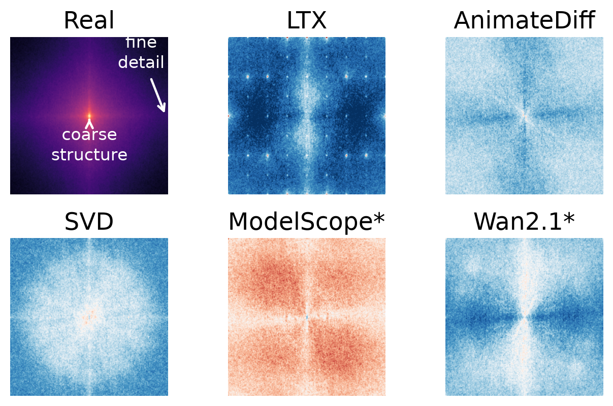
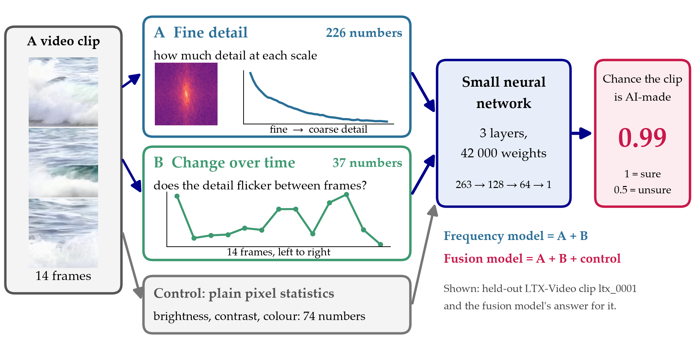
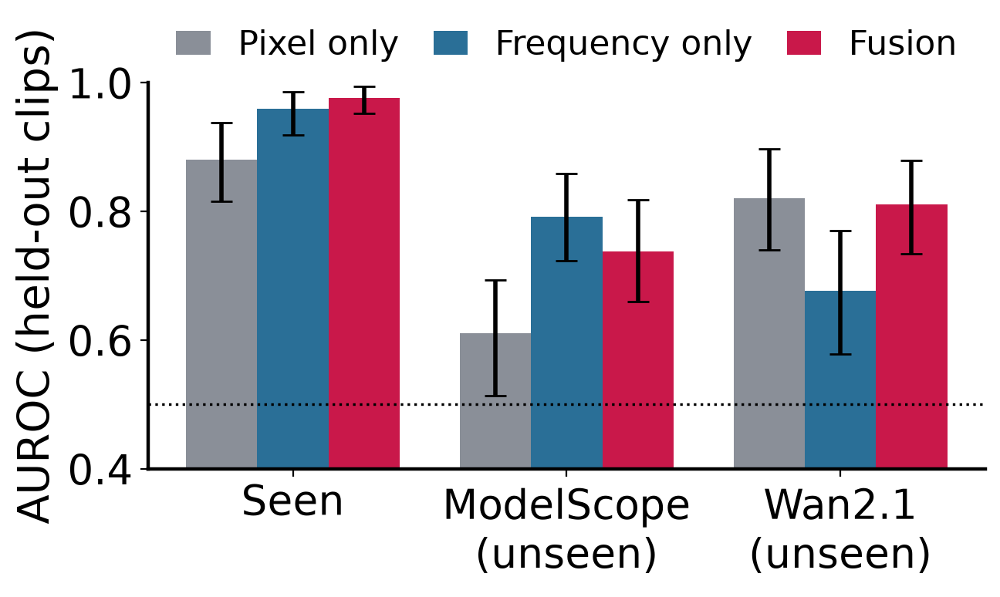
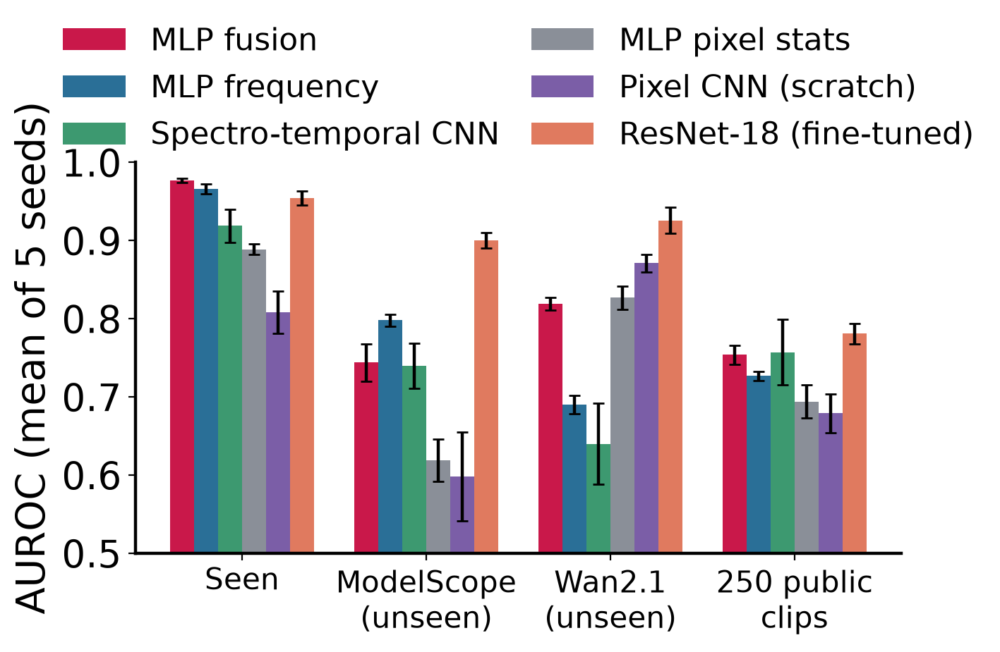

Detection of AI-Generated Video via the Frequency Domain
Team: mdhkideggimirch
Astitva Garg 1 (24B2440)
24b2440@iitb.ac.in1
IE 643Deep Learning-Theory and Practice
Abstract
AI video generators now make clips that look real. Can a computer still tell them from camera video, just by measuring the clip's
fine detail and how that detail changes from frame to frame? We built a fair test set of 984 clips and compared this
“frequency” approach with ordinary pixel statistics and with a large pretrained network. It works well on the generators it
was trained on, but only partly on new ones.
Key results (score = AUROC: 1.0 is perfect, 0.5 is a coin flip)
On generators we trained on, fine-detail features score 0.97, plain pixel statistics 0.89.
On brand-new generators our scores fall to 0.64–0.82; the big pretrained network holds up better (0.90–0.93).
Our extra tests show the clue is real (it needs real motion) but fragile (resizing or heavy compression erases it).
Introduction
The problem: tools like Sora, Veo and Wan make video that people cannot reliably tell from real footage, and a detector built for one generator often fails on the next.
The idea: every picture has coarse detail (big shapes) and fine detail (tiny texture and noise). Generators build video by cleaning up noise step by step, which changes the fine detail. A Fourier transform measures how much detail there is at each scale (Figure 1).
The second clue is time: in camera footage the fine detail changes naturally from frame to frame; generated video may flicker differently.
Why neural networks: these are hundreds of weak clues; a small network learns how to combine them.

Figure 1: Average “detail map” (Fourier spectrum) of 40 clips per source. Top left: real clips. The others show how each AI generator differs from real: blue = less fine detail than real, red = more. Each generator leaves its own fingerprint (* = never used in training).
Our contributions:
A fair dataset: real and AI clips are cut and compressed identically, so only their origin differs.
A head-to-head test of pixel, fine-detail and combined features on the same unseen clips, with error ranges.
Four extra stress tests, two of which gave negative results.
Everything re-runs: code, checksummed data and a live demo.
Workflow
Figure 2 shows the seven steps, from collecting clips to sharing the code.
Figure 2: Overall workflow. Step 6 (red) is the novelty assessment.
Methodology
Figure 3 follows one clip through the system. Two groups of numbers are measured, and a small neural network turns them into the chance that the clip is AI-made.

Figure 3: Overall architecture, with the real curves of one test clip.
A, fine detail: power at 48 scales for each frame, and for the “noise left over” after smoothing it.
B, change over time: how far those curves move between neighbouring frames.
Control: 74 ordinary pixel statistics. If A and B beat this, they add something new.
Reference models: a 1D-CNN on the curves, and ResNet-18, a big pretrained image network (11 million weights).
Dataset Details
Source
Train
Val
Test
Total
Real (Pexels stock video)
304
63
65
432
LTX-Video (AI)
115
19
17
151
AnimateDiff (AI)
98
19
13
130
Stable Video Diffusion (AI)
78
21
16
115
ModelScope (AI, test only)
0
0
99
99
Wan2.1 (AI, test only)
0
0
57
57
Total
595
122
267
984
Table 1: Clips per source. ModelScope and Wan2.1 are never used for training: they are the “brand-new generators”.
Every clip: 14 frames, 256 × 256 pixels, same compression; people and cars filtered out.
Extra test: 250 public AI clips (Sora 2, Veo 3, Kling, HunyuanVideo, Wan2).
Watch-out: file size alone still separates real from AI a little (0.65).
Novelty Assessment
Four stress tests beyond the required comparison:
Question
What we did
What we found
1. Does resizing hurt?
Shrank frames instead of cropping, same clips.
Fine-detail models lose 0.07–0.09; pixel models are unchanged. Resizing erases the clue.
2. Does it use real motion?
Played frames backwards, then shuffled them.
Backwards: no change. Shuffled: the time models lose 0.14–0.20. They use real motion.
3. Were the new-generator scores fair?
Made 72 new ModelScope clips from 36 prompts never used before.
Every model drops 0.05–0.15: the old scores were too high. Detail still beats pixels (0.72 vs 0.46); the big network barely moves (0.91 → 0.89).
4. Can our detail help the big network?
Blended our score with ResNet-18's.
No. It lifts our model (+0.06 to +0.08) but not ResNet-18 (+0.00 on trained generators, −0.06 to −0.20 on new ones).
Figure 4 (test 1): Score with cropped (dark) vs resized (light) frames. Blue bars drop; grey bars do not.Figure 5 (test 2): Score change when frames are shuffled. Below zero = the model used the frame order.
Results
On the same 267 unseen clips, fine detail beats pixel statistics on trained generators: 0.966 vs 0.889 (gap +0.075, 95 % range +0.02 to +0.15). On new generators the picture is mixed (Figure 6, Table 2).

Figure 6: Pixel vs detail vs both. Black lines: 95 % range.

Figure 7: All models, average of 5 runs.
Model (AUROC)
Trained-on
ModelScope (new)
Wan2.1 (new)
250 public
Pixel statistics
0.889
0.619
0.827
0.694
Pixel CNN (from scratch)
0.808
0.598
0.871
0.679
ResNet-18 (big, pretrained)
0.954
0.900
0.926
0.781
Ours: fine detail
0.966
0.798
0.690
0.727
Ours: detail-over-time CNN
0.919
0.740
0.640
0.757
Ours: detail + pixels
0.977
0.744
0.819
0.754
Table 2: Scores on unseen clips (average of 5 runs). Heavy compression, blur or down-scaling cost 0.2–0.3.
Conclusion
It works on generators it was trained on: fine detail beats pixel statistics with only 42 000 weights.
It transfers only partly: new generators, resizing and compression hurt; the big pretrained network is better on new generators, and our features do not help it.
Next: non-stock real footage, more new-generator tests, compression-aware training.
References
[1] Joel Frank, Thorsten Eisenhofer, Lea Schönherr, Asja Fischer, Dorothea Kolossa and Thorsten Holz. Leveraging Frequency Analysis for Deep Fake Image Recognition, ICML, 2020. https://arxiv.org/abs/2003.08685
[2] Ricard Durall, Margret Keuper and Janis Keuper. Watch Your Up-Convolution: CNN Based Generative Deep Neural Networks Are Failing to Reproduce Spectral Distributions, CVPR, 2020. https://arxiv.org/abs/2003.01826
[3] Riccardo Corvi, Davide Cozzolino, Giada Zingarini, Giovanni Poggi, Koki Nagano and Luisa Verdoliva. On the Detection of Synthetic Images Generated by Diffusion Models, ICASSP, 2023. https://arxiv.org/abs/2211.00680
[4] Haoxing Chen, Yan Hong, Zizheng Huang, Zhuoer Xu, Zhangxuan Gu, Yaohui Li, Jun Lan, Huijia Zhu, Jianfu Zhang, Weiqiang Wang and Huaxiong Li. DeMamba: AI-Generated Video Detection on Million-Scale GenVideo Benchmark, arXiv, 2024. https://arxiv.org/abs/2405.19707
[5] Taehoon Kim, Jongwook Choi, Yonghyun Jeong, Haeun Noh, Jaejun Yoo, Seungryul Baek and Jongwon Choi. Beyond Spatial Frequency: Pixel-wise Temporal Frequency-based Deepfake Video Detection, ICCV, 2025. https://arxiv.org/abs/2507.02398
[6] Kaiming He, Xiangyu Zhang, Shaoqing Ren and Jian Sun. Deep Residual Learning for Image Recognition, CVPR, 2016. https://arxiv.org/abs/1512.03385
Acknowledgments
We thank the IE 643 instructor and TAs, Pexels, and the authors of the open generators used here.